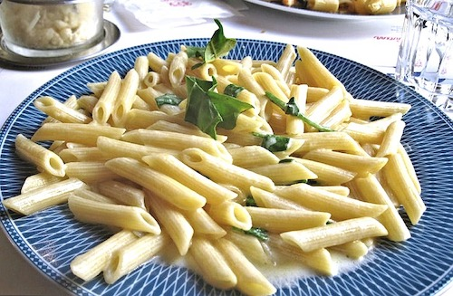

Alfredo

Description
Never buy a jar of alfredo sauce again! This recipe is quick, easy, and tastes fresh out of a 5 star restaurant.
Ingredients
- 1 box of pasta
- ½ cup butter
- 5 cloves garlic, minced or chopped
- 1 cup heavy cream
- 1 egg yolk
- 2 cups freshly grated parmesan cheese
- 2 tablespoons dried parsley
Steps
- Bring a large pot of lightly salted water to a boil. Add pasta and cook for 8 to 10 minutes or until al dente; drain.
- Meanwhile, in a large skillet melt butter and add chopped garlic. Cook on low for about 5 minutes, stirring often to prevent garlic from burning.
- Pour about a 1/4 cup of heavy cream into a small bowl. Add egg yolk and beat together; set aside.
- Pour remaining cream into the skillet. Increase heat to medium-high. As cream starts to boil, mix rapidly using a whisk. Add egg mixture slowly to prevent curdling, whisking until well blended. Stir in 1 cup Parmesan cheese until combined.
- Add remaining Parmesan cheese and parsley; mix until smooth. Remove from heat and serve over cooked pasta.